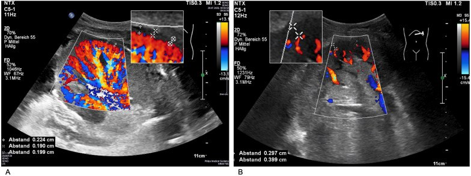
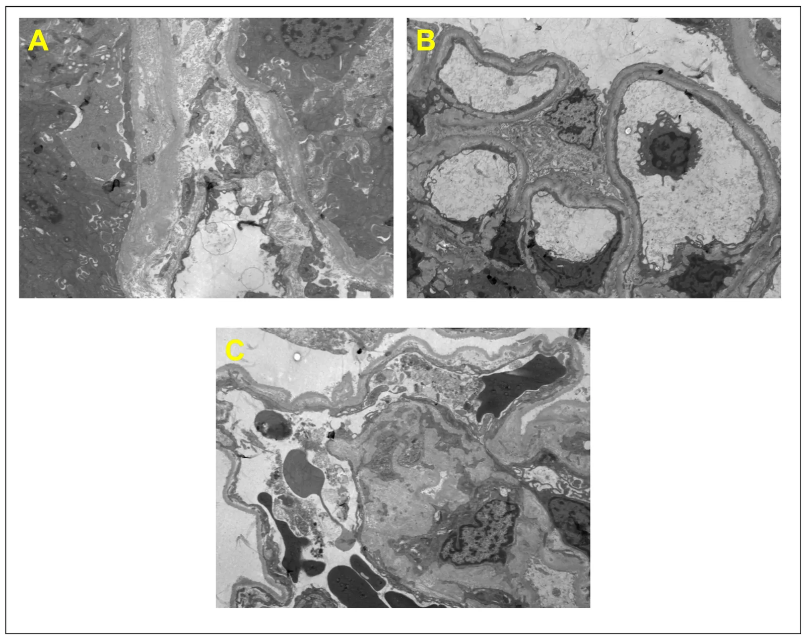
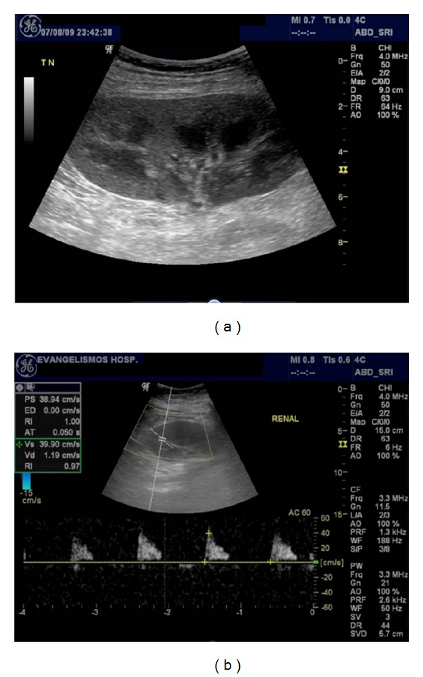

3129 — Bệnh thận IgA tái phát sau ghép thận: thận ghép "sạch" nhưng bệnh cũ quay lại
Tags: pattern:tai-phat-cau-than pattern:protein-nieu pattern:teo-vo-than pattern:ngam-thuoc-kem vung:than-ghep vung:than protocol:sieu-am-Doppler protocol:MRI-khuếch-tán protocol:sinh-thiet-than-ghep score:Oxford-MEST-C score:Banff-2019 incidentaloma:khong
Mức chắc chắn (certainty): tổng hợp y văn (literature synthesis) — ghép đoàn hệ Đan Mạch 118 người nhận (PLoS One 2026, PMCID PMC13384263, CC BY 4.0), đoàn hệ Anh 137 ca IgAN so với 122 ca ADPKD (BMC Nephrol 2026, PMCID PMC13753379, CC BY 4.0), ca lâm sàng 21 trường hợp tái phát (Kidney Med 2026, PMCID PMC13224066, CC BY-NC-ND 4.0), nghiên cứu 350 lần sinh thiết + siêu âm Doppler (Front Nephrol 2026, PMCID PMC12913139, CC BY 4.0), nghiên cứu MRI khuếch tán phụ thuộc thời gian 100 mảnh ghép (EBioMedicine 2025, PMCID PMC12682057, CC BY-NC-ND 4.0) và ba báo cáo điều trị đích (PMC12630289, PMC13127332, PMC12835414). Không có ca do nhóm tự chụp.
Câu chốt: bệnh nhân ghép thận vì IgA rồi creatinin tăng dần + protein niệu + tiểu máu vi thể, không sốt, không đau mảnh ghép, PCR BK âm — nghĩ IgA tái phát trước khi nghĩ "thuốc độc thận". Ba con số định khung: tái phát mô học 14% (tích lũy 16% sau 10 năm) ở đoàn hệ Đan Mạch (PMC13384263), sống ghép 10 năm 35,8% ở nhóm tái phát so với 88,8% ở nhóm không tái phát (PMC13753379), và chỉ 12,4% người nhận có tái phát nhưng lại chiếm phần lớn ca mất ghép muộn. Siêu âm và MRI không chẩn đoán được tái phát — chúng loại trừ nguyên nhân khác; chốt là sinh thiết + miễn dịch huỳnh quang (IgA/C3).
1. Tổng quan bệnh học – cơ chế hình ảnh (TẠI SAO)
1.1. Vì sao bệnh "của người nhận" lại nằm trong "thận của người cho"
- IgA nephropathy (IgAN) là bệnh toàn thân của hệ miễn dịch niêm mạc: tế bào B sản xuất IgA1 thiếu galactose (Gd-IgA1) → cơ thể tạo tự kháng thể IgG kháng Gd-IgA1 → phức hợp miễn dịch lưu hành lắng ở gian mạch cầu thận, hoạt hóa bổ thể theo con đường lectin/alternate (C3) → tăng sinh gian mạch + tiểu máu + protein niệu.
- Thận ghép không mang bệnh — nó chỉ là cơ quan đích của một bệnh hệ thống vẫn đang hoạt động ở người nhận. Vì vậy: tái phát không phụ thuộc người cho, và duy trì corticoid không ngăn được tái phát (đoàn hệ Đan Mạch: không có liên quan, PMC13384263).
- Yếu tố nguy cơ đã xác định: tuổi chẩn đoán IgAN trẻ hơn, tiến triển nhanh tới suy thận giai đoạn cuối ở thận gốc, thận từ người cho sống hoặc có quan hệ huyết thống (PMC13384263). Nghĩa là: bệnh "hung hãn" ở thận gốc → hung hãn ở thận ghép.
1.2. Vì sao hình ảnh KHÔNG chẩn đoán được — và vẫn phải chụp
- Siêu âm B-mode: mọi nguyên nhân suy mảnh ghép đều cho cùng một bộ dấu hiệu: mảnh ghép to ra, vỏ tăng âm, mất phân biệt vỏ–tủy, ứ nước nhẹ, dịch quanh thận. IgA tái phát không có dấu hiệu đặc hiệu — tổn thương là ở cầu thận, dưới độ phân giải của siêu âm (đường kính cầu thận ~200 µm).
- Doppler: chỉ số sức cản (resistive index, RI) từng được dùng như "dấu hiệu thải ghép", nhưng trên 350 lần sinh thiết, RI KHÔNG liên quan tới tổn thương mô học (PMC12913139). Ngược lại, phần trăm tưới máu (POV) và khoảng cách mạch ngoại vi (PVD) lại gắn với xơ hóa mạn: POV < 50% và PVD ≥ 0,25 cm dự báo teo ống/xơ mô kẽ mức vừa–nặng (PMC12913139).
- Vì sao vẫn chụp: để loại trừ 4 nguyên nhân chữa được — tắc nghẽn đường niệu (bài 3011), hẹp/huyết khối động mạch thận, nhiễm trùng (bài 116), khối/dịch quanh thận. Bỏ bước này mà sinh thiết ngay là bỏ sót nguyên nhân mổ/nong được.
- MRI khuếch tán phụ thuộc thời gian (td-dMRI): không cần thuốc cản quang, đo đường kính tế bào vỏ thận, phân suất thể tích nội bào, phân suất tưới máu tủy → phân biệt xơ hóa và thải ghép với độ chính xác ~88%, tốt hơn mô hình lâm sàng (PMC12682057). Đây là hướng theo dõi không sinh thiết — nhưng chưa thay được sinh thiết để chẩn đoán IgA tái phát.
1.3. Ngưỡng định lượng nằm lòng
| Đại lượng | Số liệu | Nguồn |
|---|---|---|
| Tái phát mô học (sinh thiết) | 14% (118 người nhận); tích lũy 16% sau 10 năm | PMC13384263 |
| Nguy cơ mất ghép khi tái phát | HR 6,7 (đã hiệu chỉnh) | PMC13384263 |
| Tái phát trong đoàn hệ Anh | 12,4% | PMC13753379 |
| Sống ghép 10 năm (loại trừ tử vong) | 35,8% (tái phát) vs 88,8% (không tái phát) | PMC13753379 |
| Creatinin lúc chẩn đoán (tái phát vs nguyên phát) | 227 vs 128 µmol/L | PMC13224066 |
| Tiến tới suy thận ở nhóm tái phát | 52%, trung vị 17 tháng (so với 50 tháng) | PMC13224066 |
| Protein niệu sau ghép nói chung | 40–80% người nhận, đa số nhẹ, nguồn gốc ống thận | PMC12644300 |
| RI và mô học | 350 sinh thiết: RI không liên quan tổn thương Banff | PMC12913139 |
| POV / PVD gợi ý tổn thương mạn | POV < 50% / PVD ≥ 0,25 cm | PMC12913139 |
| MRI td-dMRI phân biệt xơ hóa & thải ghép | ~88% độ chính xác, không cản quang | PMC12682057 |
- Chưa rõ — cần tra: không có ngưỡng protein niệu (g/ngày) hay mức creatinin tăng được thẩm định riêng để chỉ định sinh thiết vì IgA tái phát; các bài dùng "protein niệu mới/xấu đi + creatinin tăng không giải thích" rồi sinh thiết khi không tìm được nguyên nhân khác (PMC12644300). Bài này không đặt ngưỡng riêng.
2. Mẫu hình + chẩn đoán phân biệt theo vị trí (Gamut)
- Mẫu hình chung: creatinin tăng dần trong nhiều tháng + protein niệu + tiểu máu vi thể ở người ghép thận vì IgA, không sốt, mảnh ghép không đau, không ứ nước.
- Theo "khoang" tổn thương (dùng để chia gamut, vì hình ảnh không định khu rõ):
- Cầu thận: IgA tái phát; FSGS tái phát (protein niệu ồ ạt, sớm trong tuần đầu, đặc biệt ở trẻ); màng (membranous) tái phát; viêm cầu thận de novo; bệnh thận do đái tháo đường ở mảnh ghép.
- Vi mạch: thải ghép qua trung gian kháng thể (ABMR) — kháng thể kháng HLA người cho (DSA), C4d, viêm mao mạch; bệnh vi mạch huyết khối (TMA).
- Ống thận – mô kẽ: nhiễm BK polyomavirus (bài 3096), độc thận do calcineurin inhibitor, hoại tử ống thận cấp, viêm thận – bể thận (bài 116).
- Mạch lớn: hẹp động mạch thận ghép, huyết khối tĩnh mạch/động mạch mảnh ghép (bài 3153).
- Đường niệu: hẹp miệng nối niệu quản, rò nước tiểu (bài 3011).
- Mẫu hình mô phỏng (không phải tái phát): thuốc ức chế miễn dịch (CNI) làm RI tăng, mảnh ghép không to; mất nước làm creatinin tăng nhanh, đáp ứng với truyền dịch; tăng huyết áp gây protein niệu nhẹ.
- Câu hỏi định hướng: "Tổn thương ở cầu thận, ở vi mạch, hay ở ống thận?" — siêu âm/Doppler chỉ trả lời được câu "có tắc/mạch máu không", phần còn lại phải sinh thiết.
3. Bảng so sánh phân biệt (ma trận đối chiếu)
| Thực thể (entity) | Hình ảnh điển hình | Chốt vào (rule-in) | Chốt loại (rule-out) | Gợi ý xác nhận |
|---|---|---|---|---|
| IgA tái phát | Siêu âm gần như bình thường; mảnh ghép có thể to, vỏ tăng âm; không ứ nước; Doppler RI bình thường hoặc tăng nhẹ | Tiền sử ghép vì IgA + protein niệu + tiểu máu vi thể tiến triển nhiều tháng–năm; không DSA, PCR BK âm | Ứ nước rõ → tắc, không phải tái phát; PCR BK > 10⁴ copies/mL → nghĩ BKPyVAN trước | Sinh thiết + IF: IgA ≥ 1+ áp đảo ở gian mạch, kèm C3; Oxford MEST-C; EM thấy lắng đọng gian mạch |
| BKPyVAN (bài 3096) | Siêu âm không đặc hiệu; mảnh ghép có thể to | PCR BK huyết thanh dương, tăng dần; tế bào decoy trong nước tiểu | PCR âm nhiều lần → không phải BKPyVAN | Sinh thiết: SV40 lớn T dương, phân độ Banff PVN; giảm ức chế miễn dịch là điều trị chính |
| ABMR | Siêu âm không đặc hiệu; mảnh ghép to, phù | DSA dương + C4d dương hoặc viêm mao mạch (g + ptc ≥ 2); thường sớm và nặng | DSA âm, C4d âm → không đủ tiêu chuẩn ABMR | Sinh thiết + Banff 2019; DSA; điều trị khác hẳn tái phát IgAN |
| Độc thận do CNI | Doppler RI tăng, mảnh ghép không to; có thể dải tăng âm | Nồng độ thuốc cao + creatinin tăng theo liều, hồi phục khi giảm liều | Sinh thiết có tổn thương cầu thận hoạt động → không chỉ do thuốc | Nồng độ thuốc, sinh thiết (tổn thương ống thận, xơ tiểu động mạch) |
| Hẹp miệng nối niệu quản (bài 3011) | Ứ nước – ứ niệu quản trên siêu âm; phổ Doppler tardus–parvus nếu hẹp mạch kèm theo | Ứ nước + creatinin tăng, hồi phục sau đặt stent/nong | Không ứ nước → không phải nguyên nhân chính | Siêu âm, CT niệu đồ, MAG3; nong/stent |
| FSGS tái phát | Siêu âm bình thường | Protein niệu ồ ạt xuất hiện trong tuần đầu sau ghép (đặc biệt trẻ) | Protein niệu xuất hiện sau nhiều tháng → nghĩ IgA hơn là FSGS | Sinh thiết: xơ hóa từng phần, EM mất chân tế bào lan tỏa |
| Bệnh thận do đái tháo đường (mảnh ghép) | Siêu âm bình thường hoặc mảnh ghép nhỏ | Đái tháo đường lâu năm + protein niệu tăng dần, không tiểu máu | Tiểu máu vi thể rõ → không điển hình | Sinh thiết: nốt Kimmelstiel–Wilson, dày màng đáy |

*Hai mảnh ghép thận trên siêu âm Doppler năng lượng. A — tưới máu tốt: POV > 50%, PVD < 0,25 cm (mạch máu len tới sát vỏ). B — tưới máu kém: POV < 30%**, **PVD > 0,25 cm — mạch máu bị "co cụm" ở trung tâm, vỏ gần như không có tín hiệu. Trên 350 lần sinh thiết, POV/PVD gắn với xơ hóa mạn, còn RI thì không (PMC12913139). Ảnh nguyên bản 2 panel, không crop. Nguồn: Front Nephrol 2026, PMCID PMC12913139, CC BY 4.0.*4. Protocol chụp + theo dõi + hệ phân độ
4.1. Trình tự khi creatinin tăng ở mảnh ghép
- Siêu âm + Doppler mảnh ghép trong 24 giờ (không chuẩn bị đặc biệt, đầu dò 3,5–5 MHz): kích thước, vỏ tăng âm, phân biệt vỏ–tủy, ứ nước, dịch quanh thận, chỉ số trở kháng (RI) ở 3 vị trí (trên, giữa, dưới) và POV/PVD nếu máy có.
- Xét nghiệm song song, không chờ ảnh: PCR BK polyomavirus huyết thanh, DSA, nồng độ CNI, UPCR, tổng phân tích nước tiểu, CMV.
- Sinh thiết mảnh ghép khi: creatinin tăng không giải thích kéo dài, protein niệu mới/xấu đi, hoặc nghi thải ghép — sau khi đã loại trừ tắc nghẽn và nhiễm trùng.
- MRI td-dMRI (nếu có) khi chống chỉ định sinh thiết hoặc để theo dõi xơ hóa — hiện là nghiên cứu, chưa thay sinh thiết (PMC12682057).
flowchart TD
A[Creatinin tăng ở mảnh ghép thận] --> B[Siêu âm + Doppler trong 24 giờ]
B --> C{Có ứ nước hoặc bất thường mạch máu?}
C -->|Có| D[Tắc nghẽn hoặc hẹp mạch: can thiệp nong/stent]
C -->|Không| E[PCR BK + DSA + nồng độ CNI + UPCR]
E --> F{PCR BK dương cao?}
F -->|Có| G[BKPyVAN: giảm ức chế miễn dịch]
F -->|Không| H{DSA dương hoặc C4d dương?}
H -->|Có| I[ABMR: điều trị thải ghép dịch thể]
H -->|Không| J[Protein niệu và tiểu máu kéo dài?]
J -->|Có| K[Sinh thiết mảnh ghép + IF IgA/C3 + EM]
J -->|Không| L[Xem lại thuốc, huyết áp, mất nước]
K --> M{IF IgA áp đảo gian mạch?}
M -->|Có| N[IgA tái phát: RAS + corticoid + thuốc đích, KHÔNG giảm ức chế miễn dịch]
M -->|Không| O[Đọc Banff 2019 + MEST-C, điều trị theo tổn thương]
4.2. Đọc sinh thiết: hai bộ điểm phải đọc cùng nhau
| Bộ điểm | Thành phần | Ý nghĩa thực hành |
|---|---|---|
| Oxford MEST-C (dùng cho IgAN) | M tăng sinh gian mạch (M1: > 50% cầu thận), E tăng sinh nội mao mạch, S xơ hóa từng phần, T teo ống/xơ mô kẽ (T1: 26–50%, T2: > 50%), C trăng (C1: < 25%, C2: ≥ 25%) | T1–T2 và C2 là yếu tố tiên lượng xấu; dùng để quyết định cường độ điều trị |
| Banff 2019 (dùng cho thải ghép) | i, t, g, ptc, v, cg, ci, ct, cv, ah, mm + C4d, DSA | Phân biệt TCMR với ABMR; quyết định tăng hay giảm ức chế miễn dịch |
- Mẫu bệnh phẩm tối thiểu: ≥ 2 mảnh, phải có cầu thận (≥ 7 cầu thận để chấm MEST-C đáng tin), miễn dịch huỳnh quang đủ panel (IgG, IgA, IgM, C3, C1q, kappa, lambda) và hiển vi điện tử cho lắng đọng gian mạch.
- IF là chốt: IgA ≥ 1+ áp đảo ở gian mạch + C3 mới gọi là IgA tái phát; không có IF thì chỉ là "viêm cầu thận không rõ loại".

Mô bệnh học (không phải CĐHA) — mảnh ghép có IgA tái phát kèm tổn thương vi mạch: (A) tăng sinh gian mạch mức nhẹ–vừa, phù dưới nội mô từng đoạn, dày màng đáy; (B–C) các quai mao mạch bị tổn thương. Lưu ý: EM không "nhìn thấy" IgA — chất lắng đọng miễn dịch chỉ hiện trên miễn dịch huỳnh quang; EM dùng để xác định vị trí lắng đọng trong gian mạch và loại trừ bệnh màng đáy khác. Ảnh nguyên bản 3 panel, không crop. Nguồn: J Clin Med 2026, PMCID PMC13705921, CC BY-NC-ND 4.0.4.3. Điều trị (để hiểu vì sao chẩn đoán sớm lại quan trọng)
- Nền tảng: ức chế RAS (ACEi/ARB) giảm protein niệu, kiểm soát huyết áp; corticoid và MMF theo mức tổn thương; không giảm ức chế miễn dịch như khi điều trị BKPyVAN — vì đây là bệnh hoạt động miễn dịch, giảm thuốc sẽ làm bệnh nặng hơn.
- Thuốc đích mới (bằng chứng bước đầu, chưa có chỉ định chính thức cho người ghép):
- Budesonide phóng thích tại hồi tràng (TR budesonide): ca 28 tuổi, UPCR 4,55 → 1,30 g/g sau 12 tháng; tốc độ giảm eGFR chậm lại còn −6 mL/min/1,73 m²/năm (PMC12630289).
- Telitacicept (ức chế BLyS/APRIL) 240 mg/tuần × 12 tuần rồi mỗi 2 tuần: protein niệu 24 giờ giảm 51,6%, UACR giảm 62,7% ở tuần 28 (n = 25, PMC13127332).
- Iptacopan (ức chế yếu tố B): 3 ca, 2 ca giảm protein niệu và hết tiểu máu vi thể, 1 ca tiến triển (PMC12835414).
- Ghép lại: khi mảnh ghép đã xơ hóa T2/C2 và mất chức năng; tái phát có thể xảy ra ở thận ghép thứ hai — cần tư vấn trước.
5. Biến thể bình thường và cạm bẫy
- Cạm bẫy 1 — "RI cao là thải ghép": trên 350 sinh thiết, RI không liên quan tổn thương mô học (PMC12913139); RI tăng do mất nước, hẹp mạch, thuốc, nhịp tim. Đừng chẩn đoán bằng RI.
- Cạm bẫy 2 — "protein niệu là tái phát": 40–80% người ghép có protein niệu, đa số nhẹ và do ống thận (PMC12644300); chỉ protein niệu mới/xấu đi kèm tiểu máu mới đáng sinh thiết.
- Cạm bẫy 3 — sinh thiết quá sớm, bỏ qua tắc nghẽn: ứ nước nhẹ sau ghép có thể lành tính (mất trương lực niệu quản do cắt thần kinh) — nhưng ứ nước tăng dần + creatinin tăng phải loại trừ hẹp miệng nối (bài 3011) trước khi kết luận tái phát.
- Cạm bẫy 4 — nhầm BKPyVAN với tái phát: cả hai gây creatinin tăng + protein niệu + sinh thiết có thâm nhiễm. Phân biệt bằng PCR BK và SV40 lớn T; điều trị ngược nhau (BK: giảm ức chế miễn dịch; IgA: không giảm).
- Cạm bẫy 5 — bỏ IF/EM vì "đủ mô": không có IF IgA/C3 thì không phân biệt được IgA tái phát với viêm cầu thận do phức hợp miễn dịch khác; EM giúp xác định vị trí lắng đọng (gian mạch).
- Cạm bẫy 6 — "không tái phát vì còn corticoid": duy trì corticoid không ngăn được tái phát trong đoàn hệ Đan Mạch — đừng dùng lý do này để loại trừ.
- Cạm bẫy 7 — mảnh ghép "bình thường" trên siêu âm: IgA tái phát thường không có bất thường siêu âm; hình ảnh bình thường không loại trừ.
- Cạm bẫy 8 — quy mọi xấu đi cho "bệnh cũ tái phát": phải loại trừ ABMR (DSA, C4d) vì điều trị hoàn toàn khác; ABMR có thể xảy ra đồng thời với tái phát.

Minh hoạ thay đổi Doppler khi mảnh ghép suy (ca thải ghép cấp, không phải IgA tái phát): (a) mảnh ghép to nhẹ, ép xoang mỡ, giảm phân biệt vỏ–tủy; (b) phổ Doppler động mạch trong thận một pha, mất dòng tâm trương, RI 0,97 — mẫu hình "mảnh ghép suy" không đặc hiệu cho nguyên nhân nào. Ảnh nguyên bản 2 panel, không crop. Nguồn: ISRN Radiol 2013, PMCID PMC4045518, CC BY 3.0.6. Tự lượng giá — Blind Quiz
Ca 1 — Nam 34 tuổi, ghép thận từ mẹ 6 năm trước vì IgA nephropathy. Creatinin 1,9 → 2,6 mg/dL trong 8 tháng, protein niệu 1,4 g/ngày, tiểu máu 20–30 hồng cầu/µL; không sốt, không đau mảnh ghép. Siêu âm: mảnh ghép 12,1 cm, không ứ nước; Doppler RI 0,68.
- Hỏi: (1) Hình ảnh siêu âm trả lời được gì và không trả lời được gì? (2) Xét nghiệm nào phải làm trước sinh thiết? (3) Kết quả sinh thiết nào xác nhận tái phát?
Bấm để hiện đáp án (findings + chẩn đoán)
- Siêu âm: loại trừ ứ nước và huyết khối mạch — đây là giá trị chính. Không phân biệt được IgA tái phát với ABMR/CNI vì tổn thương ở cầu thận; RI 0,68 bình thường không loại trừ (RI không liên quan mô học).
- Trước sinh thiết: PCR BK polyomavirus, DSA, nồng độ CNI, CMV, UPCR — để loại trừ nguyên nhân chữa được và tránh điều trị sai hướng.
- Xác nhận: IF IgA ≥ 1+ áp đảo gian mạch + C3, EM có lắng đọng gian mạch; chấm MEST-C. Tiền sử ghép vì IgA + thận từ người cho sống có quan hệ huyết thống là hai yếu tố nguy cơ đã biết (HR mất ghép 6,7).
- Nguồn số liệu: PMC13384263, PMC12913139, PMC13753379.
Ca 2 — Nữ 41 tuổi, ghép thận 7 tháng, creatinin tăng nhanh 3 tuần, thiểu niệu, mảnh ghép đau nhẹ. Siêu âm: mảnh ghép to, không ứ nước; Doppler RI 0,92. DSA dương, C4d dương trên sinh thiết.
- Hỏi: (1) Có phải IgA tái phát không? (2) Vì sao không được giảm ức chế miễn dịch? (3) Điều trị khác nhau thế nào?
Bấm để hiện đáp án
- Không phải IgA tái phát: DSA dương + C4d dương = ABMR (thải ghép qua trung gian kháng thể); Riêng RI 0,92 không đủ để nói gì (không tương quan mô học).
- Không giảm ức chế miễn dịch: ABMR cần tăng/đổi phác đồ (thường gồm plasma exchange, IVIG, điều trị đích) — ngược với BKPyVAN (giảm ức chế miễn dịch). Giảm thuốc trong ABMR làm mất ghép nhanh.
- Khác nhau: IgA tái phát → RAS + corticoid + thuốc đích, giữ nguyên ức chế miễn dịch; ABMR → điều trị dịch thể; BKPyVAN → giảm ức chế miễn dịch (bài 3096).
- Nguồn số liệu: PMC12913139, PMC13753379.
Ca 3 — Nam 28 tuổi, ghép thận 4 năm, IgA tái phát đã xác định bằng sinh thiết (M1E0S1T1C0). Protein niệu 4,5 g/g, eGFR giảm từ 45 xuống 24 mL/min/1,73 m² trong 10 tháng. Bệnh nhân hỏi "có nên giảm thuốc chống thải để thận khỏi bị tấn công?"
- Hỏi: (1) Trả lời thế nào? (2) Lựa chọn điều trị nào có số liệu?
Bấm để hiện đáp án
- KHÔNG giảm ức chế miễn dịch: đây là bệnh miễn dịch đang hoạt động của người nhận, giảm thuốc làm bùng bệnh; khác hoàn toàn với BKPyVAN.
- Điều trị có số liệu: tối ưu ức chế RAS + kiểm soát huyết áp; budesonide phóng thích tại hồi tràng (UPCR 4,55 → 1,30 g/g sau 12 tháng, tốc độ giảm eGFR còn −6 mL/min/1,73 m²/năm); telitacicept (protein niệu 24 giờ −51,6%, UACR −62,7% ở tuần 28); iptacopan (2/3 ca giảm protein niệu, 1 ca tiến triển).
- Tiên lượng: nhóm tái phát có 52% tiến tới suy thận, trung vị 17 tháng; sống ghép 10 năm 35,8% — nên theo dõi sát và chuẩn bị kế hoạch ghép lại.
- Nguồn số liệu: PMC12630289, PMC13127332, PMC12835414, PMC13224066, PMC13753379.
Bài liên quan chéo
- 3096 – Bệnh thận do BK polyomavirus sau ghép thận (hàng phân biệt quan trọng nhất — điều trị ngược nhau)
- 3011 – Biến chứng niệu quản sau ghép thận (hẹp miệng nối/rò — loại trừ trước khi sinh thiết)
- 3153 – Huyết khối – tắc động mạch thận ghép cấp (nguyên nhân mạch máu cấp)
- 116 – Nhiễm trùng nặng sau ghép thận (nhiễm trùng mảnh ghép)
- 189 – Đánh giá trước ghép thận bằng chẩn đoán hình ảnh (bối cảnh người cho – người nhận)
Ảnh
3129_iga-graft_US-Doppler_PMC12913139-F1.jpg— Doppler năng lượng: POV > 50% / PVD < 0,25 cm (A) so với POV < 30% / PVD > 0,25 cm (B); Front Nephrol 2026, PMCID PMC12913139, CC BY 4.0.3129_iga-graft_US-RI_PMC4045518-F3.jpg— mảnh ghép to, phổ một pha, RI 0,97 (minh hoạ "mảnh ghép suy", không phải IgA tái phát); ISRN Radiol 2013, PMCID PMC4045518, CC BY 3.0.3129_iga-graft_EM_PMC13705921-F3.jpg— hiển vi điện tử mảnh ghép: lắng đọng gian mạch, dày màng đáy (mô bệnh học, không phải CĐHA); J Clin Med 2026, PMCID PMC13705921, CC BY-NC-ND 4.0.- Chi tiết nguồn, giấy phép, phái sinh:
images/CREDITS.md; link bài gốc:sources.md.
Không dùng để chẩn đoán độc lập khi chưa có người hướng dẫn.